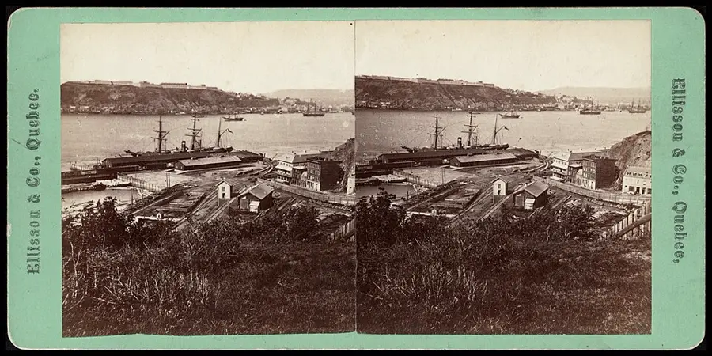
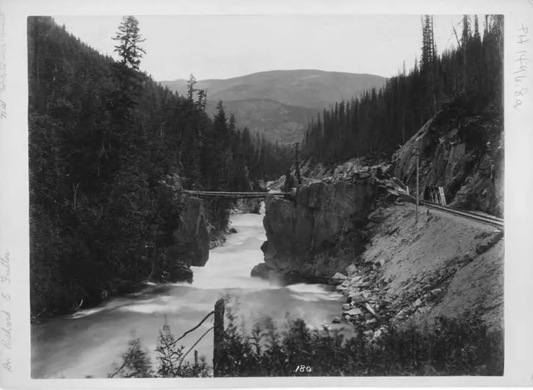
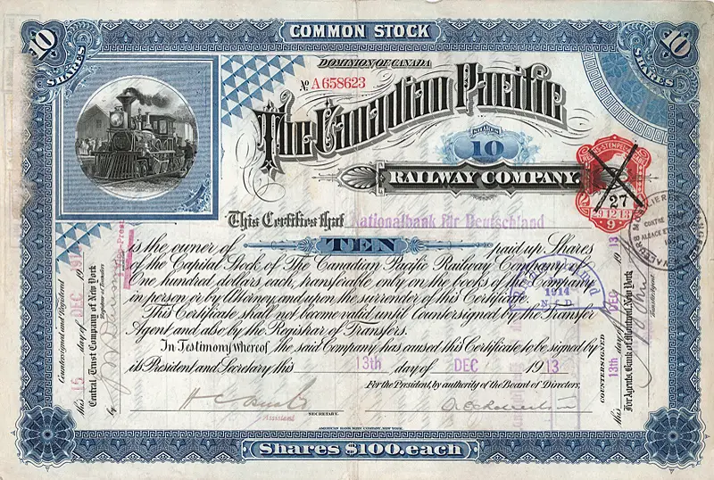

대표 로고대표 브랜드 마크
대표 로고대표 브랜드 마크캐나디안 퍼시픽 철도 Canadian Pacific Railway
캐나디안 퍼시픽 철도(Canadian Pacific Railway)는 캐나다의 1급 철도 회사이다. 선로망이 밴쿠버에서 몬트리올까지 이어지며 본사는 앨버타주 캘거리에 있다.
최종 업데이트
캐나디안 퍼시픽 철도는 어떤 브랜드인가
CPR은 캐나다의 1급 철도이며, 프랑스어 명칭은 Chemin de fer Canadien Pacifique이다. 선로망은 밴쿠버에서 몬트리올까지 이어지고, 미니에폴리스, 시카고, 뉴욕 시 같은 미국 주요 도시에서도 운영된다.
본사는 앨버타주 캘거리에 있으며, 캐나디안 내셔널 철도와는 다른 회사이다. 현재는 주로 화물운송업을 하지만, 과거 한동안은 캐나다 여러 지역의 유일한 장거리 이송 수단이기도 했다.
그래서 서부 캐나다의 개척과 발전에 직접적·간접적으로 기여했다. 정기여객운송업은 1986년에 종료되었고, 회사의 로고로는 캐나다의 국가 상징 중 하나인 비버가 선택되었다.
캐나디안 퍼시픽 철도는 어떻게 시작되고 성장했나
대륙횡단 철도 건설은 캐나다 초대 수상인 존 맥도날드(John A. Macdonald) 내각이 처음 시작한 사업이었다.
브리티시 컬럼비아는 연방에 가입하는 조건으로 동부 지역과 이어지는 교통수단을 내걸었고, 정부는 1871년 7월 20일 이후 10년 안에 철도를 건설할 것을 제안했다. 정부는 이 경로로 건설하기 위해 서부 캐나다의 토지에 많은 혜택을 주었다.
태평양 스캔들로 보수당은 1873년에 물러났고, 1878년 10월 16일에 존 맥도날드가 재집권했다. 철로는 1881년과 1885년 사이에 동부 캐나다와 브리티시 컬럼비아 간에 건설되었으며, 캐나다 최초의 대륙횡단철도였다.
캐나디안 퍼시픽 철도의 브랜드 아이덴티티는 무엇인가
캐나다 최초의 대륙횡단철도로 1881년과 1885년 사이에 건설되었고, 서부 캐나다의 개척과 발전에 기여한 1급 철도이다.
캐나디안 퍼시픽 철도는 지금 어떤 상태인가
현재는 Canadian Pacific Kansas City를 모기업으로 두고 있으며, 본사는 캘거리에 있다. 주로 화물운송업을 하며, 선로망은 밴쿠버에서 몬트리올까지 이어진다.
미니에폴리스, 시카고, 뉴욕 시 같은 미국 주요 도시에서도 운영된다. 정기여객운송업은 VIA 철도가 1978년에 이를 떠맡는 것을 계기로 1986년에 종료되었다.
캐나디안 퍼시픽 철도 로고는 어떻게 변해왔나
대표 로고대표 브랜드 마크사진으로 보는 캐나디안 퍼시픽 철도의 역사



자주 묻는 질문
캐나디안 퍼시픽 철도는 어느 나라 브랜드인가요?
캐나디안 퍼시픽 철도는 캐나다의 모빌리티 브랜드입니다.
캐나디안 퍼시픽 철도는 언제 설립되었나요?
캐나디안 퍼시픽 철도는 1881년 설립되었습니다.
캐나디안 퍼시픽 철도의 브랜드 아이덴티티는 무엇인가요?
캐나다
캐나디안 퍼시픽 철도는 어느 기업이 소유하고 있나요?
현재는 Canadian Pacific Kansas City를 모기업으로 두고 있으며, 본사는 캘거리에 있다.
캐나디안 퍼시픽 철도의 본사는 어디에 있나요?
캐나디안 퍼시픽 철도의 본사는 캘거리에 있습니다(위키데이터 기준).
캐나디안 퍼시픽 철도의 공식 웹사이트는 어디인가요?
캐나디안 퍼시픽 철도의 공식 웹사이트는 https://cpr.ca/ 입니다.
출처와 검증
캐나디안 퍼시픽 철도 관련 참고: 공식 웹사이트 · 위키데이터 Q46974 · 한국어 위키백과 · 영어 위키백과. 브랜드명은 한글과 원어를 함께 표기하되 데이터에 없는 표기는 만들지 않습니다. 기원 국가·설립연도는 검수된 정의문에서 확인된 값을 우선하고, 없을 때만 공식 웹사이트 URL이 일치하는 위키데이터 개체의 값을 씁니다. 탄생일의 월·일은 위키데이터, 위키백과 정보상자, 본문 가운데 같은 연월로 확인되는 값만 싣고, 출처끼리 다르면 싣지 않습니다. 위키데이터 값은 2026-11-11 기준입니다.